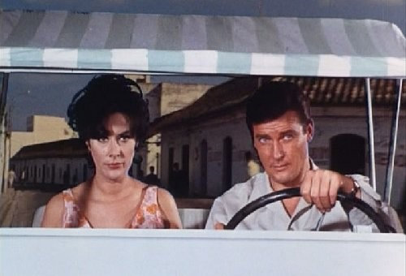

|
|
HELP FIND THE FOLLOWING LOCATIONS
PAGE 99
THE SAINT: Island of Chance (Leslie Norman: January 1967)Unknown 1: Simon and Marla pass through a local town in Jeep.

Unknown 2: Simon suggests they search the Martello tower.
 Not
a Martello tower, but the base of
a windmill used in the sugar industry.
Not
a Martello tower, but the base of
a windmill used in the sugar industry.
Rue de l'Église, Neuilly-sur-Seine, Île-de-France: Simon is not easily fooled and decides to follow Annette across Paris along this side road.
(Identified by Mark Osborne, August 2026)

THE
SAINT: The Death Game
(Leslie Norman: November 1966)
Unknown
1: The
collection
of huts where the Death Game decathletes gather in Switzerland.


Think you know a spot? Need a bigger image? Email me.
< Previous | Index | Avengerland | Next >
Copyright © 2021 Anthony R. McKay